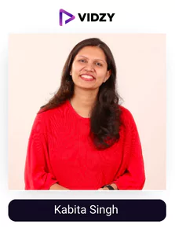
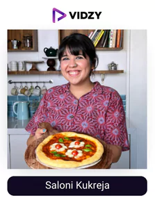
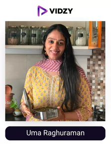
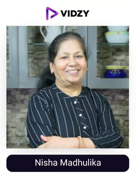
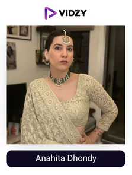
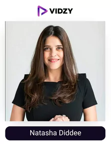
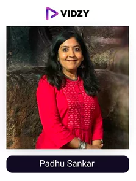
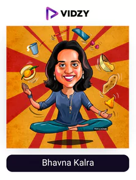

Indian cuisine reigns supreme rich flavors and aromatic dishes, making it among the finest culinary traditions worldwide. Slowly but surely, it continues to gain popularity. A remarkable statistic from Nation's Restaurant News suggests that 10% of non-Indian restaurants now offer Indian-inspired dishes on their menus.
The popularity of Indian cuisine owes much to the significant role played by Indian food influencers. These influential individuals have significantly contributed to the fame and recognition of Indian cuisine through their passion, knowledge, and captivating content.
The contribution of top food influencers in India in bringing any food to your plate is commendable. They can tantalize your taste buds and inspire culinary exploration. They present a delightful blend of entertainment, education, and gastronomic inspiration with their passion for food, creative presentations, and honest recommendations.
According to the marketing marketplace, Zefmo, the category that spends the highest on food influencers is FMCG. Actually, FMCG and influencer marketing together are a very powerful and highly effective duo. They online promote brand’s product and build up humongous trust thereon creating emotive connections between the brand and the consumer.
According to a survey, 60% of users discover things on Instagram, an indicator of engagement and high visibility, resulting in the success of brands.
We being the premium video production house in India; leverages Indian food influencers to make video Ads, social media organic videos, product demos, website videos for food brands. You can hire us for food Instagrammers based videos!
Vidzy pays close attention to detail and painstakingly designs captivating campaigns to ensure organic growth. Our video expert supervision consists of choosing the ideal influencer, writing captivating scripts, maintaining professional production settings, postproduction revaluation, encouraging engagement, and breakthrough measurable results.
So, now back to our topic! discover our curated list of the top 20 Indian food instagrammers who help people like you and me through their recommendations, recipes, and stunning food photos/videos.
Get ready to indulge your senses with these tantalizing accounts of Indian food Instagrammers that will fill your feed with culinary charm!
Top 20 Food Influencers in India That You Should Follow in 2024
Contents
- 1. Kabita Singh
- 2. Karan Dua
- 3. Shivesh Bhatia
- 4. Deeba Rajpal
- 5. Sarah Hussain
- 6. Sarah Todd
- 7. Saloni Kukreja
- 8. Priya Krishna
- 9. Uma Raghuraman
- 10. Archana
-

1. Kabita Singh
Instagram Channel: kabitaskitchen
USP:
One of the most successful food influencers in India thanks to her easy instructions and amazing presentation
Julia Child, a well-known author, and chef, once remarked that "no one learns to cook well by birth; one learns by doing." As she quit her job to devote her full-time to honing her culinary abilities, Kabita Singh appears to have done as advised. When her son started school in 2014, Kabita made the decision to make the most of her free time by launching her own YouTube channel and dubbed her love of cooking "Kabita's Kitchen." She currently has a whopping 12.6 million subscribers and is one of the select few to have been awarded a Diamond Play Button by YouTube in India.
She used social media to her advantage and turned it into a reliable source of income. As one of the top 5 female YouTube influencers, Kabita also has a significant following on Instagram.
-
2. Karan Dua
Instagram Channel: dilsefoodie
USP:
He will ensure that the best food around reaches you through honest reviews or coverage.
This account is not for the weak heart people. Do not open this page if you think checking your Instagram feed will help you survive your hunger pangs. We guarantee you won't. When you visit DilSeFoodie's page, you'll be greeted by images of delicious food that will make your mouth water and your taste bud’s tingle.
If you are into the food space or follow it consistently, you must already be familiar with them as they are one of the most consistent creators giving out quality content for a long time.
They have been recognized for their unfiltered approach to restaurants and street food in numerous reputable national dailies. The daily comfort food trails have replaced the customary fine dining experience, and they will provide you with all the stops and motivation to make it there.
If you own a restaurant or a food stall and want to get mentioned, get in touch with the Top food bloggers on Instagram India as they are familiar with the art of conveying the real taste and the authority of making your place a hit!
-
3. Shivesh Bhatia
Instagram Channel: shivesh17
USP:
Shivesh is a self-taught baker who has been featured in the Forbes 30 Under 30 Asia List - Class of 2024. He has a great personality and knowledge which will provide you a whole package when it comes to learning cooking.
Self-instructed baker turned Instagram influencer, one of the most well-known Indian food bloggers with over 1.1M followers, author of a cookbook, and content creator for companies like Cadbury's and Epigamia Shivesh Bhatia's success story practically writes itself. However, the budding baker attributes all his success to his naani (grandmother) and her passion for baking. At the age of 16, after her death, he started baking.
"It was my strategy for preserving her memories. When I discovered baking was a stress reliever, I had just started studying political science. I, therefore, made the decision to try food blogging”. When you ask him for advice on how to run a food blog or Instagram account, he places a strong emphasis on consistency, interaction, and confidence.
One of the top food Instagram influencers in India experiments with a variety of content on his Instagram with each of them providing unmatched value which gives him amazing authority in the niche. He is one of the most sought-after food influencers to collaborate with as he has made a great connection with the audience. Make sure you checkout his content!
-
4. Deeba Rajpal
Instagram Channel: passionateaboutbaking
USP:
She puts so much creativity into her food content that it becomes extremely easy to learn!
Deeba Rajpal is a food stylist and food photographer. Passionate About Baking, her food blog, is incredible and well-known worldwide. She loves to bake and has a sweet tooth, as implied by the name of her blog. Her passion is creating and preparing fruit-based recipes, primarily for desserts.
One of the top Indian food Instagram influencers also uses alternative grains, such as oats, to make delectable pieces of bread and cakes. Looking at those incredible food photos makes it clear why her Instagram is so successful. Additionally, her food styling is renowned throughout the world for its exceptional beauty and use of her signature rustic styles, including Indian rustic, Western rustic, minimalist styling, and moody hues. Anyone who wants to learn how to put creative ideas into practice to appeal to the audience must pay close attention to her content!
She has a following of 579K with a rising engagement rate as she has gained authority in the niche over the years. Make sure you check out her account!
-
5. Sarah Hussain
Instagram Channel: zingyzest
USP:
One of the most consistent influencers when it comes to posting value-adding content consistently.
Young Delhiite Sarah Hussain takes great pride in her organic fan base, which she attributes to her genuine approach to any because she supports. You know you should trust her decision because of her Engagement Score of 2.55%. You won't be sorry if you give one of her delectable suggestions a try.
She moves around from place-to-place tasting food from different cuisines so that everyone can try something new. Sarah visits upscale establishments as well as recently opened cafes and neighborhood restaurants. Next time you discover something that makes you as enthusiastic about food as she is, use that #Zingyzest!
The major element which works in her favor is her lively personality and her ability to make a connection with the audience through her recommendations, recipes, vlogs, funny reels, and more. This being the reason her reels see a great number of views ranging from 100k to 1 million and her comments section is filled with an audience wanting more. If you are into the food space, following one of the best Indian street food bloggers on Instagram is an ideal!
-
6. Sarah Todd
Instagram Channel: sarahtodd
USP:
Her recipes are easy to understand and reflect a taste like no other making you fall in love with home cooked food.
Due to her Masterchef-caliber "aloo gobi," the former Masterchef Australia contestant gained a fan base in India. Her mother-in-law from Punjab taught her how to cook by instinct rather than measuring ingredients. Sarah also acquired a culinary intuition for Indian cuisine through this training.
She gave up her lucrative modeling career and pursued her passion, which is evident in the dishes she displays for her followers to see. Sarah owns restaurants in Mumbai and Goa where she uses wine to reimagine traditional Indian dishes. With 452k followers and an Engagement Score of 2.41%, this food influencer has surely left an impact with the kind of informative content she shares and the consistency she maintains.
Now, collaborating with Nykaa, she has introduced the sizzling Hot Toddy Chilli sauce, a spicy sensation that is set to ignite your taste buds.
-

7. Saloni Kukreja
Instagram Channel: salonikukreja
USP:
She keeps experimenting and comes up with amazing dishes that you can try and make easily.
Saloni Kukreja started a blog called Food of Mumbai five years ago because she was dissatisfied with her typical college experience in Mumbai. Though it wasn’t always the plan. When she was 15, she wanted to attend culinary school, but everyone advised her against it because of her youth. She launched her blog with details about upcoming events, food trends, and new restaurants, all supported by an attractive Instagram page.
In parallel, she started experimenting with the ingredients in her pantry, creating and standardizing recipes while developing a preference for breakfast foods and desserts. But she never treated cooking as merely a pastime. Kukreja recently arrived at a culinary school in Vancouver, propelled by her dream.
My goal is to learn more about food on a practical level, including its seasonality and the significance of sustainability, she says. The aspiring chef keeps enticing her 220k+ Instagram followers with delectable dishes giving her an amazing engagement rate. All her reels cross 100k views easily as they are entertaining and filled with valuable info. Make sure you check out the content of one of the best Indian food Instagrammer!
-
8. Priya Krishna
Instagram Channel: priyakrishna
USP:
Proud of the Indian dishes, She makes them in her own amazing way ad teaches her audience through great content.
With her most recent cookbook, Indian-ish, which includes recipes influenced by the food that Indian American food writer Priya Krishna ate growing up, is all the rage in the US. Think of palak paneer in relation to "saag feta," Krishna was a well-known food writer before the publication of the book; her articles have appeared in numerous international publications. "Eating is telling a story. It is impossible to separate food from its context and the tale of how it got to your table”, according to the author. When Krishna was younger, she was less connected to her roots. She would insist on bringing peanut butter and jelly sandwiches to school for lunch so she wouldn't have to be embarrassed by her mom's dal chawal.
Since that time, a lot has changed. Krishna, who boasts about kadhi, Kaju katli, chhonk, and other Indian dishes in her articles and on Instagram, asserts that there is a lot more to Indian cuisine than the popular dishes found on Indian takeout menus in America.
She shares valuable information about food from all across the world, easy recipes, and much more. This has helped her gain a following of over 382K and a great engagement rate. All of her reels cross 100K views easily and reflect amazing creativity in catering to all you need to know about food. Make sure you check out the content of one of the most followed food influencers on Instagram!
-

9. Uma Raghuraman
Instagram Channel: masterchefmom
USP:
One of the top food bloggers and Instagram influencers making cooking easy for you.
Uma Raghuraman, also known as Masterchefmom, is an enthusiastic cook and a food blogger who has won numerous honors. She has two children and also posts food on Instagram. Through her blog and profile, Master Chef Mom, Uma shares her life's lessons and mouthwatering recipes. She is one of the best Indian food bloggers on Instagram, with over 1.5 million views and more than 1,000 vegetarian recipes. You might drool at the mouthwatering images of her shared dishes that she posts.
Masterchefmom has received high praise from critics and has been named by Saveur Magazine as one of the "top food bloggers in the world," "top chef blogs in the world," "top Indian food blogger," and "best food Instagram." Additionally, Masterchefmom was listed as one of "India's best food blogs" in HT Brunch Magazine. Additionally, she has gained recognition in both international and Indian cuisine thanks to her partnerships with numerous multinational food brands on her Instagram and youtube handles. Recognizing her remarkable digital presence, Forbes India and INCA have honored Uma Raghuraman by including her in the esteemed list of India's Top Digital Stars.
-
10. Archana
Instagram Channel: archanaskitchen
USP:
She has over 10k recipes, each of which can be learned and applied by anyone.
When her friends and family urged her to write a book, Archana, an NRI engineer who now resides in Canada, decided she wanted to share her healthy cooking advice and recipes with the entire world. She started her blog, Archana's Kitchen, at that time. She currently collaborates with numerous well-known chefs, including Vikas Khanna, and served as the model for the first Google Chrome television commercial!
All social media channels are optimized by Archana's Kitchen to give her a sizable 368K followers on Instagram alone! This self-taught cook, who is really giving professionals a run for their money with her holistic approach to cooking, has a tone of simple, healthy recipes available for you to try.
Moreover, she makes it a point that her content is entertaining as well so one of the top food bloggers on Instagram India puts her element in the various formats of content she shares. Her attention to detail on each of the elements required to make it a great experience for the audience is what gets her over 100K views on each of her reels easily. Make sure you check out the content of this account if you are looking to learn new recipes with great taste!
-

11. Nisha Madhulika
Instagram Channel: nishamadhulika_cooks
USP:
One of the biggest food influencers who constantly teaches the audience to make their favorite dishes easily.
Nisha Madhulikar, an Indian chef and restaurant consultant, is one of India's most popular YouTubers. In 2011, she launched her YouTube channel, and she hasn't looked back since. She was 63 at the time. She demonstrated, however, that age is not a barrier to pursuing your dreams with her passion and dedication.
Nisha owes her success to her audience who cook with her and give her feedback. It encourages her to perform better. She is one of the top 5 Youtube stars in Asia and is well known for her delicious and healthy vegetarian food from India. She dedicates her recipes to the working class who are perpetually seeking "maa ke hath ka khana." To date, she has distributed 1,115 videos of recipes without garlic and onions.
She shares frequent updates about her videos, valuable food tips, and short recipe videos on her Instagram which has given her a great following of 280k on Instagram as well. More than 74% of people surveyed claim that ROI for videos is higher than for straightforward static images or any other marketing method as per explain ninja, if you want to leverage it as well, she is one of the finest influencers to get on your side.
Make sure you follow one of the finest Cooking influencers India if you want to become a pro in cooking!
-

12. Anahita Dhondy
Instagram Channel: anahitadhondy
USP:
One of the most successful chefs teaches you her food secrets.
Delhi-based chef Anahita N. Dhondy is from a Parsi family. Her entire life has been centered around food. She draws inspiration from her mother, who has been baking cakes and preparing and serving Parsi food. Since she was ten years old, Anahita has been assisting in the kitchen. She has always known that when she grows up, she will don the chef's hat. She enrolled at IHM-Aurangabad to pursue her culinary dream, and she graduated with honours in the culinary arts program. She completed her training at Taj properties, the BBC at JW Marriott, and Le Cordon Bleu in London to earn a Grande Diplome.
An honoree of the Forbes 30 under 30 list, Anahita is currently the chef manager at the upscale restaurant Sodabottleopenerwala. The food on Anahita's page is quirky, colorful, and delicious, and you can see that she uses it to document her many culinary, travel, and life experiences. She also shares recipes, and as evidenced by her 2.27% Engagement Score, she is happy to answer questions from her followers. Make sure you follow one of the top 20 food Instagram influencers in India.
-
13. Karishma Sakhrani
Instagram Channel: karishma_sakhrani
USP:
Her style of cooking and teaching is unique and a treat for the audience.
Karishma Sakhrani has had quite the journey from business developer to MasterChef India finalist. Her desire to eat healthily drives her passion for food. "I still get a rush from creating wholesome food that is delicious and appealing! My food is always beautifully presented and clean without being preachy, she claims. Sakhrani frequently travels the globe when she's not working out or cooking. Her amazing personality and ability to make his audience a pro in cooking or food is what vies her immense popularity on instagram with over 113K followers and a great engagement rate.
Sakhrani is all about balance and healthy living, but if she had a choice, her last meal would be a Neapolitan pizza and a glass of Merlot. On her website and Instagram page, she offers cooking instructions, diet advice, and travel accounts. One of our absolute favorite Indian food influencers on Instagram to follow!
-
Instagram Channel: sharmispassions
USP:
Her experience and hard work have helped her in making all the topics in food easy for you to understand through her content.
While looking for a recipe, south Indian Sharmilee Jayaprakash fell in love with food blogging. And this is how she launched Sharmis Passion, her food blog, in 2009. She thought this was a pivotal moment in her life. Due to the birth of her child, she left her job and focused solely on food blogging. It turned into a way for her to feed her child wholesome food.
She wasn't an expert cook, so lots of practice helped her develop her culinary abilities. She initially honed her skills in South Indian cooking. The former IT manager also decided to switch to food blogging because she found the idea of cooking, taking pictures, and sharing her recipes to be motivating. With time she transitioned to Instagram as well and made her mark with the same amazing quality of content being posted consistently. With a lot of practice and her passion for food, she began experimenting with various cuisines and now teaches her audience through her easy-to-understand recipes.
This helped her gain a following of 113k and a great engagement rate with the top brands going after her for collaborations. Make sure you check out one of the contents of one of the top food Instagram influencers India!
-

15. Natasha Diddee
Instagram Channel: thegutlessfoodie
USP:
She is extremely passionate about food and what she does which makes her content look flawless and extremely informative.
One of the most well-known Indian food bloggers and The Gutless Foodie on Instagram, Natasha Diddee, discovered her love of food only after losing her stomach. That's right. Diddee enthusiastically accepted the challenge of eating selectively after undergoing a gastrectomy due to a stomach tumour. She turned to Instagram and simple, home-cooked food, inspiring many people along the way. Although she has a talent for cooking, she admits, "I eat out of pure greed as I can literally say that my eyes are bigger than my stomach!" One of the top cooking influencers India is based in Pune and enjoys posting pictures of her daily meals on Instagram, which range from vegetarian parathas to hearty thalis.
This has helped her gain a following of over 109K and an engagement rate that is constantly rising seeing the quality of content she posts regularly. All her reels are extremely well shot and narrated giving her a great number of views. Make sure you check out her content!
-

16. Padhu Sankar
Instagram Channel: padhuskitchen
USP:
She will make your life easier with short and easy to make veg recipes.
Chef, photographer, recipe developer, and web designer Padhu is multitalented. He also started the food blog Padhu's Kitchen. You can find easy Indian vegetarian recipes, kid-friendly recipes, recipes for Indian holidays, traditional South Indian vegetarian recipes, cooking fundamentals, and more on the well-known food blog.
The desire to encourage other aspiring cooks to cook is what drove Padhu to start her blog and Instagram. This Instagram profile is for you if you're a strict vegetarian and want to learn and improve your culinary abilities. It offers a variety of vegetarian Indian recipes with enticing visuals. Furthermore, it acts as a platform for the exchange of many wonderful recipes that have been passed down from one generation to the next. There are numerous posts with step-by-step instructions for beginners. Make sure you check out the content of one of the best Indian food influencers on Instagram.
-
17. Sia Krishna
Instagram Channel: siakrishna
USP:
She will teach you those amazing traditional recipes that her dadi/nani has passed on.
The most bizarre food Sia Krishna has ever encountered was natto, a famous Japanese soybean dish that tasted like a bowl of phlegm and smelled like stinky cheese. Krishna's blogging journey has been a rollercoaster, from tasting disasters to preparing them in her own kitchen to whipping up a success story.
After relocating to the UK and discovering that she didn't enjoy microwave dinners and takeout, she began her cooking career using traditional recipes that her ajji (grandmother) and amma had passed down to her. In response, Monsoon Spice was founded in 2006. She reveals, "My blog is a potpourri of regional Indian recipes." A quick glance at her Instagram page is like taking a tour of all the different kitchens in the nation.
Along with teaching great tasting dishes, providing tips to remember while cooking, etc., she makes sure each element of her content from creativity, videography and instructions are clear so that people can gain immensely from it. This has helped one of the food Instagram influencers gain a following of 45.8K and a rising engagement rate as she rises her consistency on the platform.
-
18. Ankiet Gulabani
Instagram Channel: ankietgulabani
USP:
He is extremely knowledgeable in the food niche and has gained authority by the amazing content he shares.
Belly Over Mind is more of Ankiet Gulabani's personal journal. He is a well-known food enthusiast at heart and one of the top Indian food bloggers working today. He began it as a website for recipes, and it quickly rose to the top of the cooking website rankings. His blogs now concentrate on millennials who seek out simple recipes.
Even a novice cook can relate to Belly over Mind's excellent storytelling. Ankiet also thinks he gained a lot of knowledge from his early, mistake-filled days. As time went on, he adopted a more astute strategy for engaging his followers and posting savory recipes to his Instagram account as well. His following of 40.1K is constantly rising along with his engagement rate as he has stayed true to his mission of providing value to his audience through the content one of the top cooking influencers India shares consistently.
-
19. Mallika Basu
Instagram Channel: mallikabasu_
USP:
Extremely talented and knowledgeable, you will find her valuable content in different formats that you can choose anytime.
Indian cook Mallika works in the corporate world and also writes about food. Additionally, she is the author of two books: Masala: Indian Cooking for Modern Living and Miss Masala: Real Indian Cooking for Busy Living (2010). (2018). Before going to England for her undergraduate degree, Mallika had never considered a career as an international chef.
Before getting her master's, she had never been in a kitchen. She only had the instructions for one dal and one chicken curry. And now She is one of the best Indian food instagrammer. Her well-known food blog Quick Indian Cooking combines her hilarious life stories with scrumptious Indian recipes.
Additionally, she has appeared on Jamie Oliver's online cooking channel, FoodTube, as well as Madhur Jaffrey's Curry Nation TV comeback program.
This has given her an insane amount of authority in the food niche with the top brands frequently collaborating with her and getting benefitted. Make sure you check out her content!
-

20. Bhavna Kalra
Instagram Channel: themoderndesi.co
USP:
She is consistent with giving out amazing informative food content.
Bhavna Kalra, who was raised in Mumbai by a Punjabi family, relocated to Australia more than ten years ago. She worked as a software consultant during the day and whenever she missed home, she would eat comforting Indian food. She had a passion for words as much as she loved to cook and eat. She quickly became a devoted food blogger known as Just A Girl From Mumbai because of the combination. Recently rebranded as The Modern Desi, Kalra has advanced her goals by also hosting pop-up dinners at her Sydney home. However, her devotion to chai and the confluence of sub-Indian cultures hasn't changed.
"I grew up eating North Indian food, so I consider it to be my specialty. But I've also started to make some decent Bengali and Maharashtrian food," she adds. Along with amazing food photos, valuable tips, recipes, etc she also sprinkles shayari throughout her Instagram, which furthers the apparent sense of nostalgia.
To Sum Up
Majority of the people today rely on these Indian food influencers on Instagram to learn something new or to get recommendations near them giving them a lot of credibility or authority. This results in a golden opportunity for brands to take this trust and make profitability out of it. And all of it has never been easier, thanks to the revolution in marketing - Vidzy.
So, what are you waiting for? Get in touch with them now!